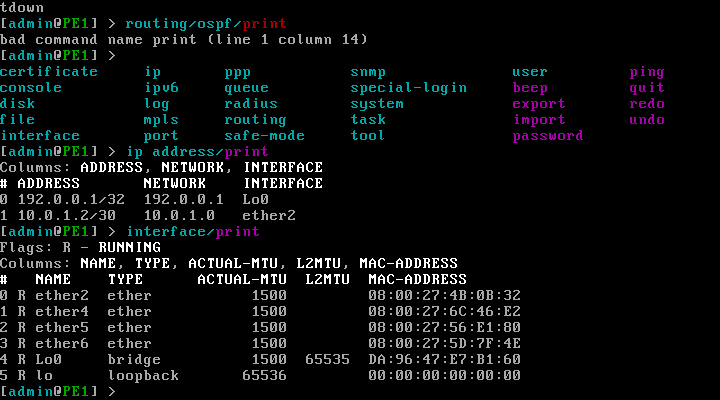
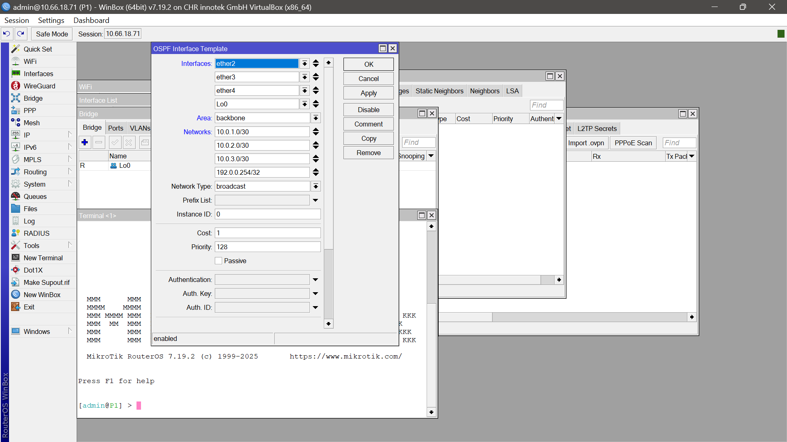

Implémentation d'une Architecture IP/MPLS Avancée
Découvrez ce projet technique approfondi sur la conception et le déploiement d'une architecture IP/MPLS résiliente et haute performance au sein du réseau d'Orange. Ce projet a exploité la robustesse des routeurs, passerelles et antennes MikroTik pour optimiser la fluidité du trafic, la scalabilité des services et la disponibilité globale du réseau.
Conception et Déploiement d'Architecture IP/MPLS avec MikroTik
Présentation Détaillée du Projet IP/MPLS chez Orange
Ce projet stratégique a consisté en la conception, l'implémentation et la validation d'une architecture IP/MPLS robuste et évolutive pour le réseau cœur et d'accès d'Orange. L'objectif principal était de capitaliser sur la flexibilité et les performances des équipements MikroTik afin de fournir une connectivité hautement disponible, de garantir une Qualité de Service (QoS) différenciée et de préparer l'infrastructure aux exigences futures des services de télécommunications.
L'architecture a été minutieusement segmentée en couches (Cœur, Distribution, Accès) pour une gestion optimisée du trafic. Nous avons intégré des routeurs MikroTik CCR pour les fonctions de cœur de réseau, assurant une capacité de traitement élevée et une agrégation efficace. Les CRS ont été déployés en couche de distribution pour une commutation et un routage performants, tandis que les RouterBoard et antennes MikroTik ont été utilisés pour l'accès et les liaisons sans fil Point-à-Point (PTP) / Point-à-Multipoint (PTMP), étendant la portée du réseau. Une attention particulière a été portée à l'implémentation des meilleures pratiques en matière de routage dynamique (OSPF, BGP), de segmentation logique (VRF) pour isoler les services, et de mécanismes de redondance (VRRP), afin d'assurer une résilience inégalée face aux pannes potentielles.
Le Défi : Renforcer l'Infrastructure Réseau d'Orange
Face à l'explosion de la consommation de données et à la diversification des services (Voix sur IP, vidéo en streaming, IoT), l'infrastructure réseau d'Orange nécessitait une modernisation profonde. Le défi majeur était de migrer vers une architecture IP/MPLS capable de gérer une complexité accrue, de garantir une performance optimale sous forte charge, et d'assurer une haute disponibilité ainsi qu'une Qualité de Service (QoS) irréprochable pour toutes les applications critiques.
La Solution : Une Architecture IP/MPLS Performante et Économique
L'adoption de la technologie IP/MPLS, combinée à l'utilisation stratégique des équipements MikroTik, a prouvé être une solution à la fois économique et puissante pour répondre aux exigences exigeantes du réseau d'Orange. Cette approche a permis une ingénierie de trafic avancée, une segmentation efficace des services via les VPN MPLS (L3VPN et L2VPN), et une résilience accrue grâce à la mise en œuvre de chemins multiples et de mécanismes de redondance sophistiqués, minimisant les interruptions de service.
Phases d'Implémentation et Composants Techniques Clés
Phase de Conception et Planification Stratégique
- Analyse Approfondie des Besoins : Identification précise des services à supporter, modélisation et estimation du trafic, et définition des exigences strictes en matière de performance, de fiabilité et de sécurité.
- Architecture de Haut Niveau (HLD) : Élaboration de la structure du réseau en couches distinctes (Cœur, Distribution, Accès), conception de la topologie globale, élaboration du plan d'adressage IP détaillé, et définition des VLANs/VRFs pour une segmentation logique.
- Sélection et Dimensionnement des Équipements MikroTik : Choix stratégique des séries CCR, CRS, RouterBoard et antennes les plus adaptées aux besoins spécifiques de chaque couche de l'architecture.
Phase de Configuration et Implémentation Technique
- Configuration de Base Sécurisée : Mise en place de l'accès sécurisé aux équipements, synchronisation horaire via NTP, et configuration des interfaces physiques et logiques.
- Configuration Avancée MPLS : Activation du protocole LDP (Label Distribution Protocol), configuration des protocoles IGP (OSPF) pour l'échange de routes internes, implémentation des MPLS L3VPN (avec VRF et BGP) et des L2VPN (VPLS/VPWS).
- Implémentation de la Qualité de Service (QoS) : Définition des règles de classification du trafic (via Mangle rules), configuration des files d'attente hiérarchiques (Tree Queues), et mise en œuvre de politiques de limitation de bande passante pour prioriser les flux critiques.
- Intégration des Réseaux Sans Fil : Mise en place des liaisons de backhaul PTP/PTMP et configuration de l'accès client via les antennes MikroTik.
Mécanismes de Redondance et Tests de Validation Rigoureux
- Redondance et Haute Disponibilité : Mise en œuvre de la redondance des liens (bonding, agrégation de liens), configuration des chemins multiples via OSPF/ISIS, et déploiement de protocoles de haute disponibilité comme VRRP et Fast Reroute (FRR) pour une tolérance aux pannes maximale.
- Tests Exhaustifs et Validation Fonctionnelle : Exécution de plans de tests rigoureux pour valider la connectivité de bout en bout, les performances sous charge, la correcte application des politiques de QoS, la résilience de l'architecture et la sécurité globale du réseau.
Supervision, Maintenance Opérationnelle et Documentation
- Intégration au Système de Gestion de Réseau (NMS) : Configuration des agents SNMP, centralisation des logs système (Syslog), et intégration avec les plateformes de supervision Zabbix/PRTG.
- Procédures de Maintenance et de Mise à Jour : Définition des routines de sauvegardes régulières, planification des mises à jour du RouterOS et surveillance proactive des ressources système.
- Documentation Technique Complète : Création et mise à jour continue des schémas réseau détaillés, du plan d'adressage, et des procédures opérationnelles standard.
Déploiement et Configuration : Les Commandes Clés MikroTik
Pour la mise en œuvre technique de cette architecture IP/MPLS, l'interface en ligne de commande (CLI) de RouterOS a été largement utilisée pour sa flexibilité et sa puissance. Voici un aperçu des commandes fondamentales qui ont permis de configurer les différentes composantes du réseau.
Configuration de Base et Interfaces Réseau
-
Définition d'une adresse IP sur une interface :
/ip address add address=192.168.1.1/24 interface=ether1 -
Ajout d'une passerelle par défaut pour le routage
externe :
/ip route add dst-address=0.0.0.0/0 gateway=192.168.1.254 -
Création d'un VLAN pour la segmentation logique
:
/interface vlan add name=vlan100 vlan-id=100 interface=ether2 -
Activation sécurisée du service SSH pour la gestion à
distance :
/ip service enable ssh
Configuration MPLS et Routage IGP/BGP Stratégique
-
Activation du package MPLS sur le routeur :
/system package enable mpls -
Activation du protocole LDP sur une interface dédiée
MPLS :
/mpls interface add interface=ether3-mpls-link enabled=yes -
Configuration OSPF (exemple simplifié pour l'IGP)
:
/routing ospf instance add name=default router-id=1.1.1.1
/routing ospf network add network=10.0.0.0/8 area=backbone -
Configuration BGP (essentielle pour les L3VPN)
:
/routing bgp instance set default as=65000
/routing bgp peer add name=PE2 remote-address=2.2.2.2 remote-as=65000 update-source=loopback0
/routing bgp vpn add instance=default vrf=CustomerA route-distinguisher=65000:1 route-target=65000:1
Qualité de Service (QoS) et Implémentation VRF Avancée
-
Création d'une règle Mangle pour la classification du
trafic (VoIP prioritaire) :
/ip firewall mangle add chain=prerouting action=mark-packet new-packet-mark=voip_traffic dscp=46 passthrough=no -
Création d'une Queue Tree pour la priorisation de la
VoIP :
/queue tree add parent=global queue=default name=VoIP_Queue packet-mark=voip_traffic limit-at=5M max-limit=10M priority=1 -
Création d'une instance VRF pour l'isolement de
services :
/ip vrf add name=CustomerA routing-mark=CustomerA_VRF -
Association d'une interface réseau à une instance VRF
spécifique :
/ip route vrf add interface=ether4-customerA routing-mark=CustomerA_VRF
Configuration Sans Fil et Surveillance Réseau Essentielle
-
Configuration d'une liaison sans fil Point-à-Point
(Mode AP) :
/interface wireless add name=wlan1 mode=ap-bridge band=5ghz-a/n/ac frequency=auto ssid=OrangeBackhaul -
Configuration d'une liaison sans fil Point-à-Point
(Mode Station) :
/interface wireless add name=wlan1 mode=station-bridge band=5ghz-a/n/ac ssid=OrangeBackhaul -
Activation de SNMP pour la supervision à distance
:
/snmp set enabled=yes community=public trap-target=10.0.0.1 -
Configuration de l'envoi des logs système vers un
serveur Syslog externe :
/system logging add topics=info,debug action=remote remote=10.0.0.254
Étapes de Réalisation : Du Design Initial aux Opérations Quotidiennes
La mise en œuvre de ce projet complexe a suivi un cycle de vie rigoureux et structuré, garantissant un déploiement maîtrisé, une intégration fluide et une transition réussie vers l'exploitation dans l'environnement réseau exigeant d'Orange.
1. Planification Approfondie et Ingénierie Préliminaire
- Audit Complet : Réalisation d'un audit exhaustif de l'infrastructure réseau existante et identification des contraintes techniques et opérationnelles.
- Définition des Exigences : Spécification détaillée des exigences fonctionnelles et non fonctionnelles, incluant les SLAs (Service Level Agreements) et les politiques de sécurité.
- Conception HLD et LLD : Élaboration des documents de design de haut niveau (HLD) et de bas niveau (LLD) de l'architecture IP/MPLS, incluant les schémas topologiques et les spécifications techniques.
- Planification Détaillée : Mise en place d'un plan d'adressage IP précis, attribution des IDs MPLS, définition des Route Distinguishers (RDs) et Route Targets (RTs).
- Sélection des Équipements : Choix et dimensionnement précis des équipements MikroTik en fonction des capacités requises et de l'optimisation des coûts.
2. Préparation, Tests en Laboratoire et Automatisation
- Environnements de Test : Préparation des environnements de test et de pré-production pour simuler le réseau réel.
- Pré-configuration en Laboratoire : Configuration initiale des équipements MikroTik dans un environnement de laboratoire, incluant l'utilisation de GNS3 pour la virtualisation.
- Développement de l'Automatisation : Création de scripts d'automatisation (avec Ansible) pour faciliter et standardiser le déploiement des configurations en laboratoire et en production.
- Sécurisation de Base : Implémentation des configurations de base sécurisées (accès, NTP, gestion du réseau).
3. Déploiement Physique et Intégration en Production
- Installation Physique : Déploiement physique des routeurs, gateways et antennes MikroTik sur les sites stratégiques d'Orange.
- Mise en Place des Liaisons : Installation et validation des liaisons de fibre optique et des liaisons sans fil Point-à-Point/Point-à-Multipoint.
- Intégration Progressive : Intégration par phases de la nouvelle architecture dans le réseau existant d'Orange, avec une phase pilote rigoureuse.
- Configuration des Protocoles : Configuration des protocoles de routage (OSPF, BGP) et des protocoles MPLS (LDP, L3VPN/L2VPN).
- Déploiement des Politiques : Mise en œuvre des politiques de Qualité de Service (QoS) et des règles de sécurité (firewall).
4. Tests d'Acceptation, Optimisation et Recette Finale
- Tests d'Acceptation : Exécution de plans de tests exhaustifs couvrant la connectivité, la performance, la résilience et la sécurité du réseau.
- Validation des Performances : Mesure et validation des débits, de la latence et de la gigue sous différentes charges de trafic.
- Optimisation des Configurations : Ajustement et optimisation des configurations basées sur les résultats des tests et les retours d'expérience.
- Recette Formelle : Phase de recette officielle avec les équipes opérationnelles d'Orange pour la validation finale et le transfert de responsabilités.
5. Supervision Continue, Maintenance et Documentation Complète
- Intégration NMS : Intégration de la nouvelle architecture au système de supervision réseau (NMS) central d'Orange Nord-Kivu.
- Surveillance Proactive : Mise en place de la surveillance proactive des performances et des incidents potentiels.
- Procédures Opérationnelles : Définition des procédures de maintenance préventive, corrective et évolutive.
- Documentation : Création et mise à jour régulière de la documentation technique détaillée, incluant les schémas réseau, les plans d'adressage et les procédures.
Galerie du Projet IP/MPLS
Cette galerie illustre quelques aspects clés de la mise en œuvre et de la supervision de l'architecture IP/MPLS.


Impact Stratégique & Objectifs Atteints du Projet
Optimisation Drastique de la Performance Réseau
Amélioration significative de la vitesse et de l'efficacité de la transmission des données grâce à l'ingénierie de trafic MPLS, réduisant la latence et les pertes de paquets pour les services critiques d'Orange.
Haute Disponibilité et Résilience Accrues
Garantie d'une continuité de service maximale, même en cas de panne, grâce à des mécanismes de redondance avancés (VRRP, Fast Reroute) et l'implémentation de chemins de secours multiples.
Scalabilité et Flexibilité des Services Inégalées
Capacité d'ajouter et de gérer rapidement de nouveaux services (Voix, Vidéo, Data) avec une grande efficacité, grâce à la modularité et à la flexibilité intrinsèques de l'architecture IP/MPLS et des VRF.